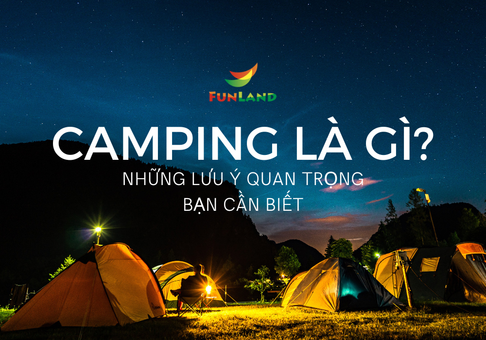
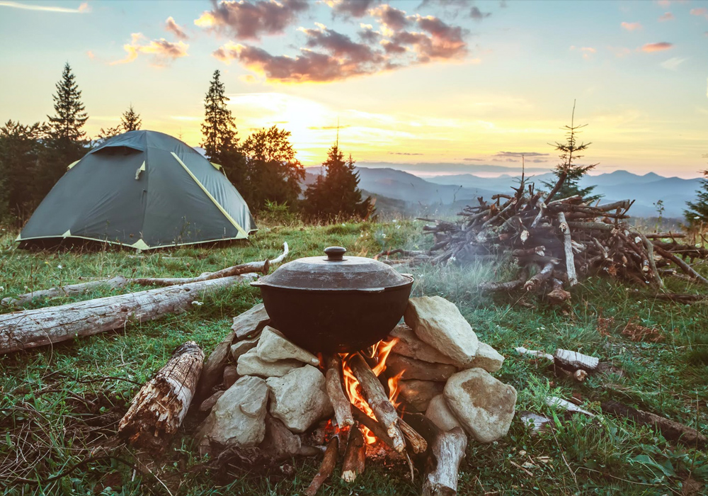
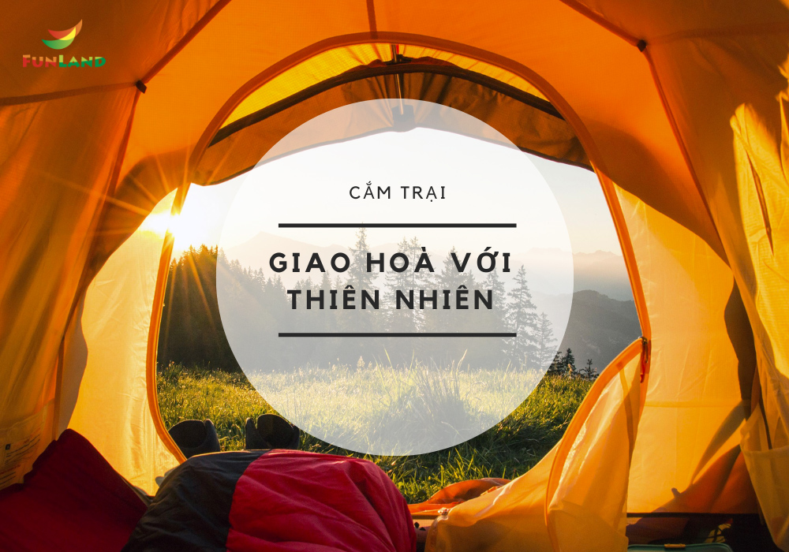
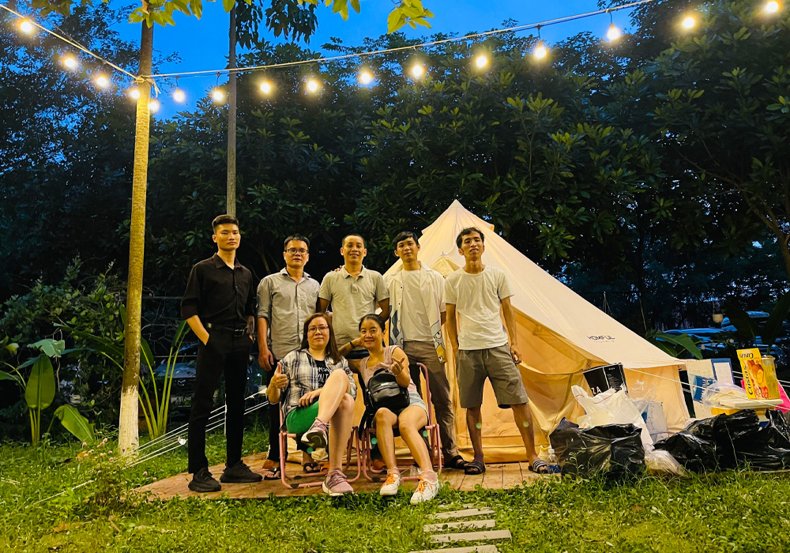
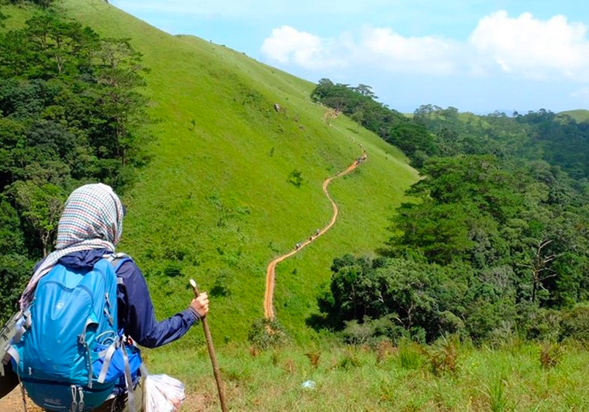
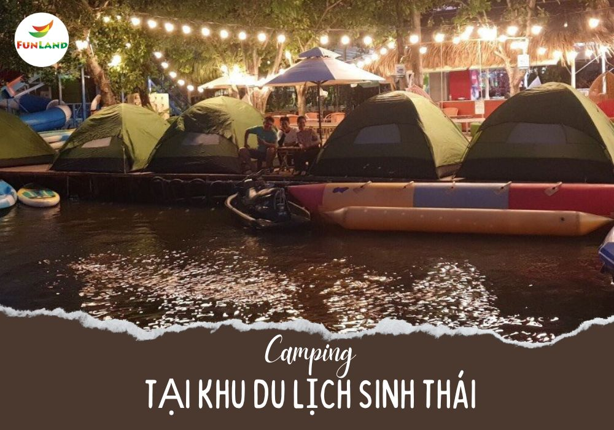
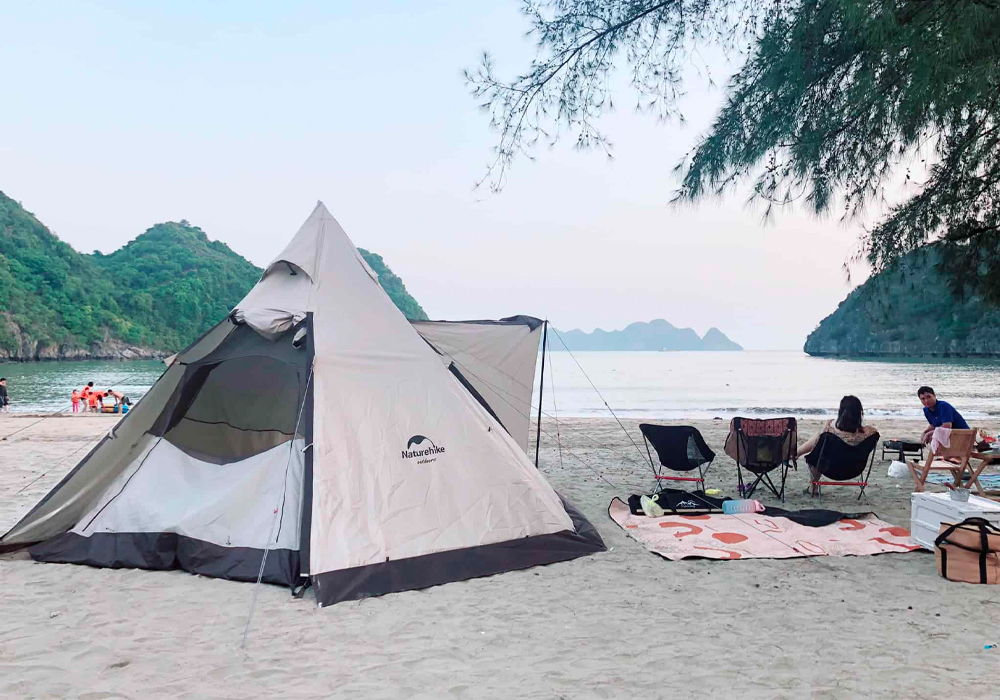
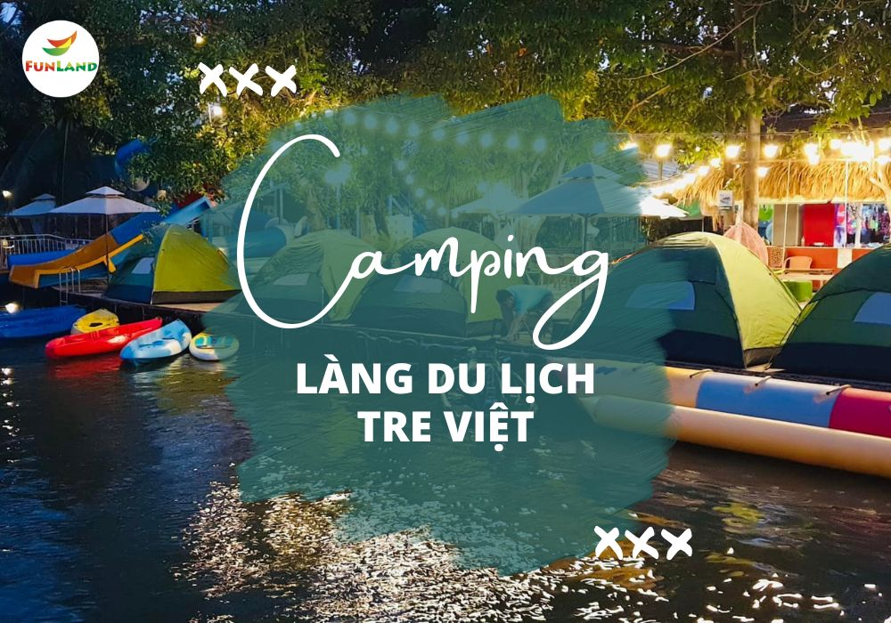

Camping là gì? Tổng hợp kiến thức QUAN TRỌNG bạn cần biết
05/01/2023
Ngày nay, cuộc sống bận rộn khiến mỗi dịp cuối tuần cảng trở nên quý giá hơn bao giờ hết, các hoạt động vui chơi vì thế mà cũng đắt đỏ hơn ngày thường. Tránh cái ồn ào nơi phố thị, chúng ta đang có xu hướng tự tổ chức giải trí qua các hoạt động ngoài trời như đi camping, hay picnic,… Vậy để có một buổi camping trọn vẹn và hoàn hảo, ta cần chuẩn bị và lưu ý những gì? Hãy cùng theo dõi những gợi ý mà Tre Việt đã tổng hợp trong bài viết dưới đây nhé!

1. Camping là gì?
Thuật ngữ “camping” bắt nguồn từ gốc tiếng Anh: “camp” có nghĩa là “trại”. Việc thêm hậu tố “-ing” để diễn tả hành động dựng trại, cắm trại nên người Việt dùng “camping” với nghĩa cắm trại.
Cụ thể, Camping (dựng trại, cắm trại) là một hoạt động ngoài trời mà chúng ta sẽ ở qua đêm, không trú ẩn ở những nơi như nhà, khách sạn mà sử dụng nơi trú ẩn cơ bản như lều trại hoặc xe cắm trại. Thông thường, người đi camping sẽ rời khỏi thành phố để dành thời gian ở những nơi tự nhiên hơn, đồng thời kết hợp các hoạt động khác, phục vụ cho nhu cầu giải trí, thư giãn như: picnic, leo núi, dã ngoại, trekking, hiking,…

2. Những điều tuyệt vời mà camping mang lại
Nhìn chung, hoạt động camping giúp ta thư giãn sau những ngày làm việc căng thẳng, mệt mỏi. Vậy camping có mang lại cho ta điều gì đặc biệt hơn so với các hoạt động vui chơi giải trí khác?
2.1. Giao hoà với thiên nhiên
Tham gia hoạt động camping sẽ giúp ta được hòa mình vào không khí tự nhiên và có phần hoang dã, là dịp bạn được trải nghiệm cảm giác được sống gần với thiên thiên hơn, được hít thở bầu không khí tự nhiên trong lành, tách biệt hẳn với cuộc sống hằng ngày với áp lực, mệt mỏi, khác hoàn toàn với thành phố nơi bạn sinh sống và làm việc.

2.2. Mở rộng hiểu biết, rèn luyện kỹ năng sinh tồn nơi hoang dã
Khi du lịch camping, bạn sẽ được đến những miền đất mới mẻ và bình yên hơn. Bạn sẽ thấy những điều rất thú vị, như: những loài cây, sinh vật, động vật chưa từng thấy, hay những hiện tượng thiên nhiên chưa từng được trực tiếp trải nghiệm. Đặc biệt với trẻ em, sẽ là dịp bố mẹ - người lớn truyền dạy nhiều kiến thức, kinh nghiệm sinh tồn lý thú cho trẻ.
2.3. Tăng tính đoàn kết, nâng cao chất lượng cuộc sống
Camping là hoạt động mang tính chất tập thể, đội nhóm. Do đó, các thành viên trong đoàn hay gia đình sẽ trở nên đoàn kết, gắn bó hơn rất nhiều. Đồng thời, một chuyến đi dã ngoại sẽ giúp bạn sạc lại năng lượng cho bản thân mình. Nhờ vậy, khi quay trở về công việc và cuộc sống thường nhật sẽ cảm thấy vui vẻ và tích cực hơn.

3. Vậy các hoạt động của camping là gì?
Một buổi camping giúp con người hoà quyện với thế giới tự nhiên thông qua các hoạt động trải nghiệm, vui chơi, cắm trại. Để buổi camping được phong phú và vui vẻ hơn, bạn có thể kết hợp các hoạt động lại với nhau, như:
Tổ chức các trò chơi tập thể ngoài trời với mục đích gắn kết nhau hơn. Điều này phù hợp khi bạn tổ chức camping tại các điểm du lịch, bãi biển, nơi đây sẽ có không gian và các trò chơi để chúng ta có thể vui chơi cùng nhau. Ngoài ra, các bạn có thể đến các công viên tự tổ chức một buổi cắm trại nho nhỏ cho gia đình và hội bạn thân cũng sẽ khá thú vị.
Tham gia hiking, trekking: Đây là hoạt động đi bộ đường dài khám phá thiên nhiên hoang dã, kết hợp du lịch dã ngoại, du lịch thể thao mạo hiểm, cắm trại... Các hoạt động hiking, trekking thường được người chơi lựa chọn ở những vùng có địa hình hiểm trở, đồi núi, các vườn quốc gia, rừng hoang sơ và ít người biết đến.

Leo núi: Hãy tưởng tượng sau một chuyến leo núi mệt mỏi, bạn có được một chỗ nghỉ ngơi lý tưởng và ngắm nhìn toàn bộ khung cảnh bao la mây trời từ đỉnh núi. Cắm trại trên đỉnh núi hiện đang là hoạt động thu hút khá nhiều bạn trẻ muốn thử thách bản thân nhiều hơn.
4. Cần chuẩn bị gì cho một buổi camping?
4.1. Các vật dụng bắt buộc
Để có thể tổ chức một chuyến đi trọn vẹn nhất, bạn cần lên danh sách các món đồ bắt buộc phải mang theo khi đi camping một mình hay cùng nhóm. Cụ thể là:
- Lều trại có kích thước và số lượng phù hợp với tập thể, đội – nhóm, tổ chức tham gia cắm trại.
- Giày thể thao (có thể là giày leo núi, giày địa hình) với kích thước phù hợp để bảo vệ đôi chân khi vận động, di chuyển, leo núi,….
- Túi ngủ để giữ ấm khi ngủ nếu thời điểm hay địa điểm tổ chức camping có nhiệt độ thấp
- Hộp sơ cứu y tế chứa đầy đủ dụng cụ y tế, bông băng, đồ sát trùng, … để có thể sơ cứu đơn giản các tình huống sức khỏe dễ gặp khi đi cắm trại.
- Vật dụng vệ sinh cá nhân cần thiết như: bàn chải đánh răng, kem đánh răng, khăn, lược,…
- Balo du lịch để đựng mọi đồ dùng và đồ thiết yếu cá nhân sẽ dùng trong suốt chuyến đi.

4.2. Vật dụng khác
Tùy vào mục đích của chuyến đi camping, bạn có thể trang bị thêm một trong các vật dụng sau:
- Ghế xếp, khăn, bạt trải để không phải ngồi dưới đất khi nghỉ ngơi, ăn uống,…
- Áo mưa, ô dù, mũ rộng,… để tránh thời tiết xấu.
- Bình nước để chứa nước đem theo người khi di chuyển trên những chuyến đi dài.
- Thiết bị bảo hộ leo núi để bảo vệ cơ thể khi leo núi.
5. Tổ chức camping ở đâu cho phù hợp
Có nhiều gợi ý cho chuyến đi của bạn thêm hấp dẫn. Tùy thuộc vào sở thích cũng như ngân sách bạn bỏ ra, bạn có thể chọn một trong các hình thức dưới đây:
5.1. Khu du lịch sinh thái, công viên
Với người dân sống tại thủ đô, có lẽ lựa chọn được ưu tiên chính là các khu du lịch sinh thái. Các địa điểm này thường gần với trung tâm, tiện cho việc di chuyển, khuôn viên có hệ sinh thái rất xanh mát, không khí trong lành, cảnh quan yên bình, gần gũi với thiên nhiên,… nên rất phù hợp để tổ chức camping vui chơi, thư giãn, lấy lại năng lượng cho những kỳ nghỉ hay sau những ngày làm việc mệt mỏi.

Bên cạnh đó, các bạn có thể kết hợp đến các công viên giải trí ở ngoại thành để tổ chức cắm trại. Như vậy, bạn có thể tham gia được nhiều trò chơi mạo hiểm cũng như vẫn có được các dịch vụ công cộng tốt nhất. Tuy nhiên, vé vào cửa tại các công viên giải trí thường đắt gấp nhiều lần so với vé vào các khu sinh thái hay các địa điểm công cộng khác. Bạn nên tìm hiểu và cân nhắc lựa chọn nhé!
5.2. Bãi biển
Bãi biển là lựa chọn rất được yêu thích khi các doanh nghiệp muốn tổ chức hoạt động camping do cán bộ, nhân viên mình. Bởi bãi biển là không gian rộng, có nhiều khoảng trống lớn, có tầm nhìn hướng biển đẹp, mát mẻ nên rất dễ dàng tổ chức cắm trại, ngắm cảnh, các trò chơi tập thể đông người tham gia.
Không chỉ vậy, khi đến các vùng biển, các bạn sẽ được thưởng thức hải sản tươi ngon mà không phải mang vác cồng kềnh quá nhiều thực phẩm như khi đến các địa điểm du lịch thiên nhiên khác. Các trò chơi tại biển cũng rất đa dạng và sinh động, hứa hẹn sẽ giúp đội nhóm tham gia chơi hết mình.

5.3. Đồi núi
Ngoài những khu sinh thái, bãi biển nổi tiếng, bạn có thể dành buổi camping của mình để khám phá một ngọn núi mới. Tuy nhiên, hãy lên kế hoạch chi tiết và tìm hiểu về ngọn núi trước khi tiến hành cắm trại. Bởi vì, camping trên núi sẽ tiềm ẩn nhiều nguy hiểm hơn do đây vẫn là vùng đất hoang dã.
5.4. Camping tại gia
Có thể bạn thấy bất ngờ, nhưng xu hướng “cắm trại tại gia” hiện đang rất được nhiều gia đình ưa chuộng.
Nó phù hợp với những ai khi chưa thể sắp xếp cho một chuyến đi xa, chưa có thời gian hay đủ điều kiện để tham gia một buổi cắm trại ở những địa điểm lạ, thì cắm trại tại mảnh sân sau vườn, sân chơi trong khu chung cư, trên sân thượng tòa nhà, … cùng bạn bè, gia đình hay hàng xóm cùng các hoạt động vui chơi, tổ chức ăn uống cũng rất độc đáo và vui vẻ.
Hy vọng những thông tin, kiến thức về định nghĩa camping là gì, những điều cần chuẩn bị trước khi đi camping được chia sẻ trên đây sẽ giúp bạn biết cách tổ chức chuyến đi cắm trại hoàn hảo nhất.
Bạn có thể tham khảo, trải nghiệm camping tại Làng du lịch sinh thái Tre Việt - Funland. Với không gian xanh mát, dòng sông yên bình, các trò chơi nước độc đáo và đa dạng,... sẽ khiến buổi camping của gia đình bạn được trọn vẹn nhất.

Làng Du Lịch Sinh Thái Tre Việt - Funland: 25 Phan Văn Đáng, Ấp Phước Lương, Xã Phú Hữu, Huyện Nhơn Trạch Nhơn Trạch, Đồng Nai
Bài viết khác
- YEAR END PARTY - CÙNG NHÌN LẠI MỘT HÀNH TRÌNH
- Điểm vui chơi hot sát vách Sài Gòn
- 20 Địa Điểm Tổ Chức Team Building Rộng Rãi, Lý Tưởng, Gần Sài Gòn NHẤT
- Bỏ Túi Ngay 25 Khu Du Lịch Sinh Thái Gần Sài Gòn Lý Tưởng Nhất Năm Nay
- Team Building - Nơi gắn kết những giá trị đồng đội
- Tết đi đâu Chơi ở gần Sài Gòn – 9 Địa điểm Chơi Tết đầy Thú Vị